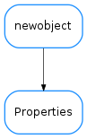

Properties¶

-
class
Properties(props=None)[source]¶ Bases:
future.types.newobject.newobjectA Python replacement for java.util.Properties
-
list(out=<open file '<stdout>', mode 'w'>)[source]¶ Prints a listing of the properties to the stream ‘out’ which defaults to the standard output
-
propertyNames()[source]¶ Return an iterator over all the keys of the property dictionary, i.e the names of the properties
-